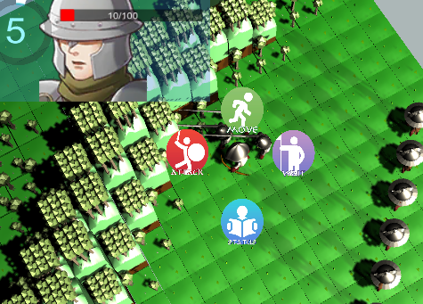

Description: The game we planned to make referred to the classic tactic RPG, Fire Emblem series. Players need to command their soldiers to fight against their enemies.。 However, each product of this series uses “player-enemy turn based” system, which means after player give command to all soldiers, and than enemy take its turn to command all soldiers. We want to try implementing new turn-based system to this game. Our game is also a turn-based tactic game. The story is about the war between two parties in medieval age. The reason why we choose this type bases on several factors. One of them is we both love to play this type of game, therefore we would like to challenge ourselves and try to learn the related techniques.
Genre:
Grid-based, tactics, turnbased and medieval age
Human resources:
2 programmers, Eric Kwok, Boreas He
Tools:
Unity3D, 3Dsmax, Photoshop, Maximo
Final Report in pdf (Preparing... ...)
Game in exe (Preparing... ...)
